EINS
Data User Stories
April 20th 2020
Data User Stories 4
Registration Process 4
User Updates COVID-19 Status 9
User Tests Path for COVID-19 Contact 10
Geolocation and Statistics Server 11
Registration Process 11
User Updates COVID-19 Status 12
User Tests Path for COVID-19 Contact 12
Data User Stories
https://www.lucidchart.com/documents/edit/5cdb9be6-d5ed-4ebf-8673-7c6ebe55cbfe/0_0
Registration Process
- A user downloads the app.
- The user is required to confirm if they are older/younger than 16 years of age. If a user is younger than 16 years old then they are required to confirm that their legal guardian has provided consent to use the app.
- The user completes the following onboarding screens.
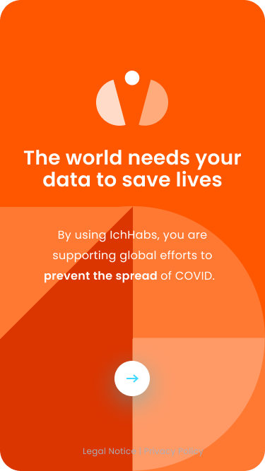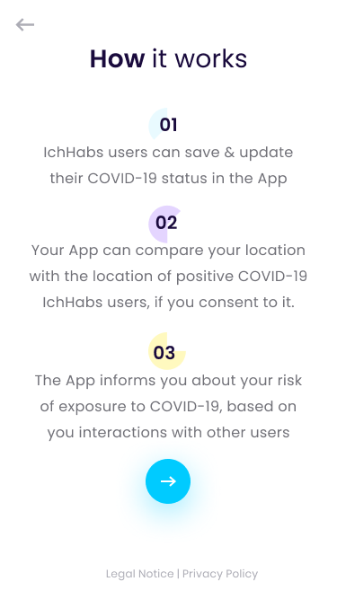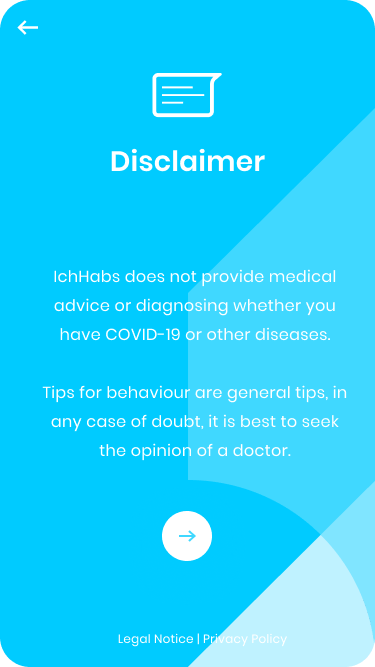
- The user locks the app with their biometrics or device password.
- The app connects to the VIA servers:
- End-to-end asymmetric encryption is achieved.
- The app stores hashed AppID on the server.
- If the user agrees to have their future locations stored in the app:
- Get the user to allow app tracking via prompt.
- The app takes a sample of geolocation points at n-minute intervals and adds this to a list of location-date time points in the local device storage via encryption.
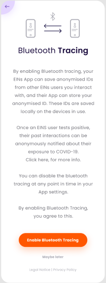
- If the user agrees to download past geolocation data into the app:
- The user selects either Apple (note: Apple will not be available with first release) or Google account.
- The user authenticates into their Google or Apple account via the app
- The user is prompted to download location data to their cloud drive from Google or Apple.
- The user is prompted to access cloud drive.
- The app fetches 2 weeks of data from the user’s cloud drive.
- The app deletes the data from the user’s cloud drive.
- The app then terminates the connection to the account and cloud drive then discards the access tokens.
- The app takes the location history data and thins it by taking N-minute samples of geolocation.
- The app discards the original location data download.
- The app saves the list of DateTime-Location points into encrypted local device storage.
- Users are asked to enable push notifications. If agreed:
- The app requests push token from the apple or android servers.
- The app receives the push token.
- The app sends the push token, along with hashed AppID, to the server for storage.
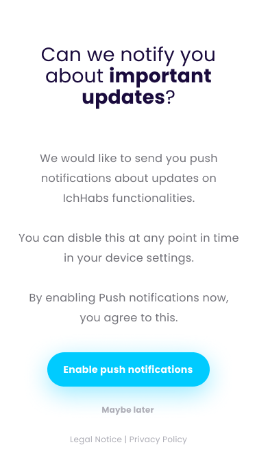
- The user enters their COVID-19 status and subsequent questions.
- The app stores the answers into an encrypted local device. 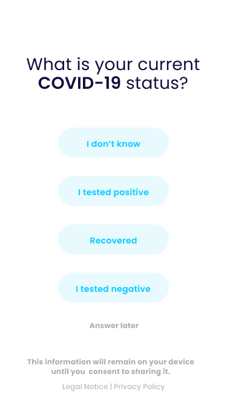
- The user enters basic survey data based on the status answer.
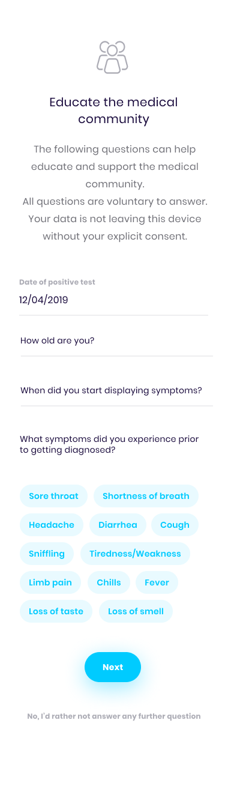
- Users are then asked if they are happy to donate and share the survey data anonymously. If agreed:
- User age is masked by adding a random factor of +-2 years to the date. This anonymizes the data, without statistically damaging the set.
- The data is uploaded along with the hashed AppID (ensures no double submissions).
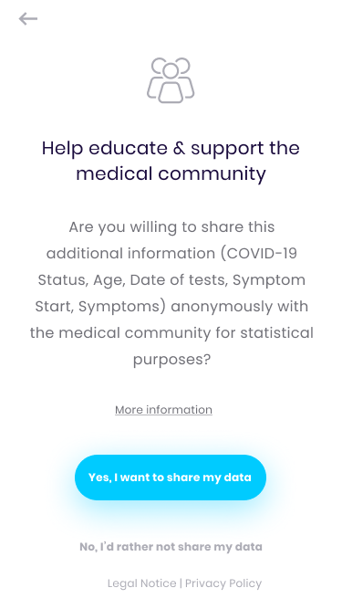
User Updates COVID-19 Status
- The user updates their COVID-19 status.
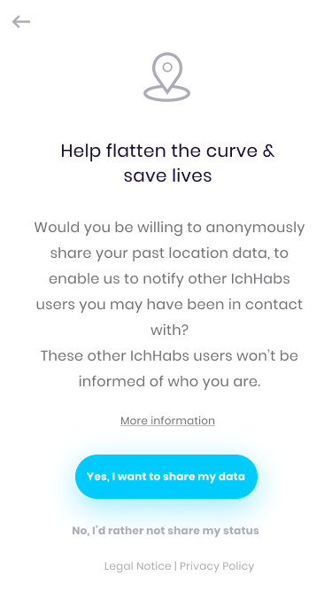
- If the user tests positive, he/she is asked to share their Location-DateTime history.
- If the user agrees, he/she is then asked for the date of symptom start and date of the positive test result
- The app crops the Location-DateTime history to 2 weeks[a][b][c][d][e] (note: this will be refined later on in the development process).
- The app uploads the data to the server along with the hashed AppId.
- The hashed AppID is stored in a submission table to prevent abuse and multi submission protection.
- The submission for the dataset is stored separately and anonymously.
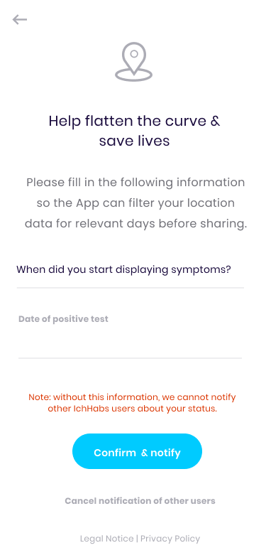
User Tests Path for COVID-19 Contact
- A check is carried out on 3 events:
- The user opens the app.
- The app is set to check daily.
- App receives a push notification.
- App prepares geolocation parameters to request relevant data set:
- App checks geolocation data for maximum and minimum latitude and longitude of their locally stored geolocation data points.
- The app adds some randomized buffers/padding to the boundaries which mask the identity, reducing correlation capabilities further.
- App submits bounds to the server when downloading heatmap chunk.
- App receives the heatmap data in question.
- The app runs a local matching process to determine contact with risk areas and people.
- The app reports any contact to the app user, via the UI/UX for warning and suggestion.
- The app discards the local heatmap data.
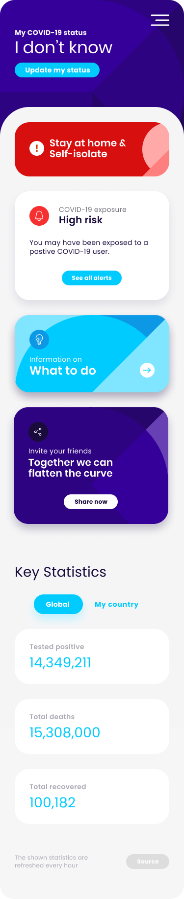
Geolocation and Statistics Server
The EINS server’s main task is to securely store the geolocation-timestamp points of donated and shared data from patients who tested positive for the virus. The geolocation server needs the ability to store, as well as quickly access a point cloud of the geolocation-timestamp heat map. This data does NOT have any links between the data points (therefore no paths, just points). There are various ways in which EINS can anonymise this data in the future, using ‘gaussian blur functions’ to add noise. This is so that there is less chance of de-anonymising the data.
Registration Process
- The server receives the AppID of a newly installed app on a new device.
- If agreed to by the app user, the server stores the push token of each app install with the AppID.
- If the user agrees to submit their survey data, the server accepts the survey data along with the AppID.
- The AppID is hashed and checked against a list of hashed IDs saved. If the hash is already present, then the submission is discarded as a duplicate or a malicious submission.
- If the AppID was not found, the survey data is saved and the AppID is added to the list and then discarded. The AppID is not saved alongside the survey response.
User Updates COVID-19 Status
- If a user that tests positive agrees to share the data, their app sends the server a set of geolocation-timestamp points:
- The server must insert the data points into the mapping, not preserving the consecutive nature (not a path, just dots with location and time).
User Tests Path for COVID-19 Contact
- When the server gets a request to allow a user to get part of the heatmap to do local collision/risk checking.
- The server accepts the latitude and longitude bounds (which contain randomization from the user to obscure/anonymize the data further), fetches the heatmap points between those areas and returns that to the user.
[a]+kate@thedelta.io if we still upload 2 weeks of location data fine. If we go with my suggestion to only upload 2 days before symptom start, this needs an update from Jared
_Assigned to Kate Gower_
[b]i made a suggestion (3. & 4.)
[c]this would also need to be adjusted in the lucidchart then
[d]+lena@viadata.io for the first version of this it will only allow the user to share their last 2 weeks of historical data, I do think your suggestion is a better option however it will require a fair amount more work.
[e]I put in a note, but kept point 2 & 3 separate as we split the journey in the two screens ( I assume we keep that). That's why I think one step needs to be added in the lucid chart as well